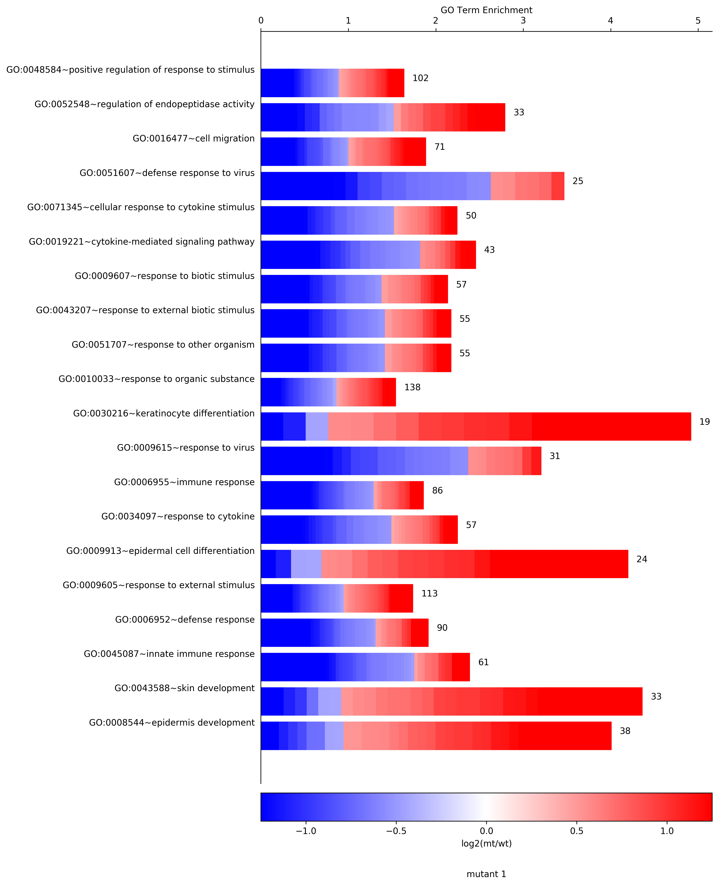
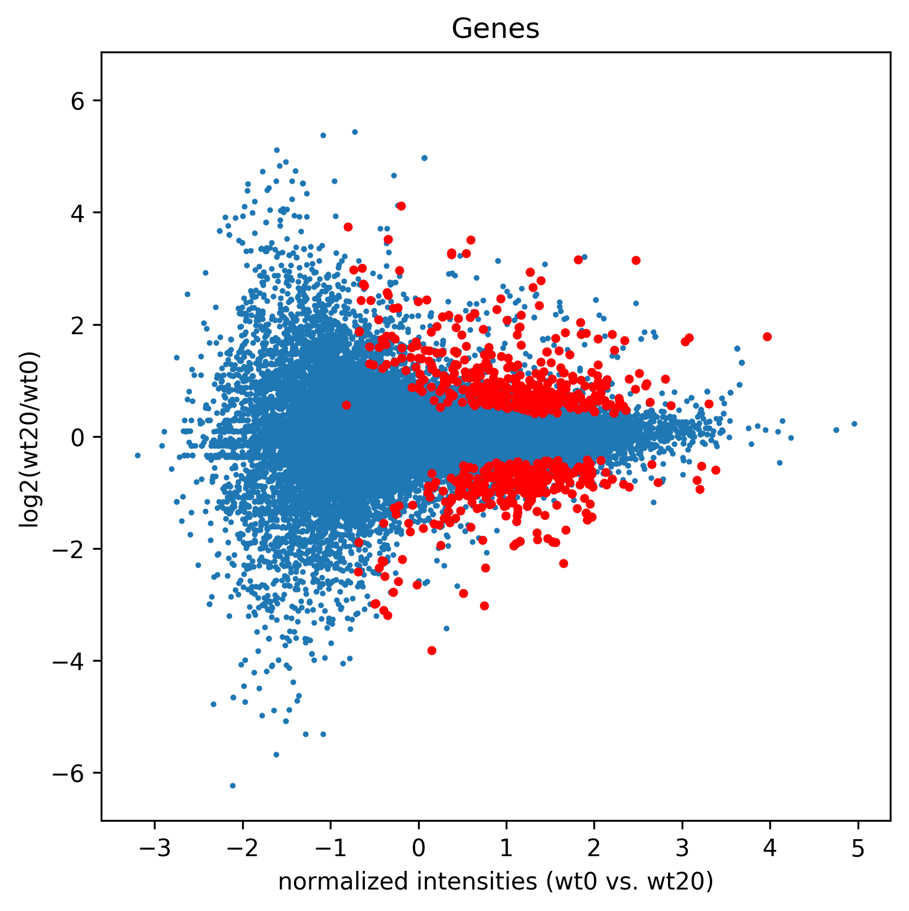

CellPlot
Python implementation of the CellPlot from the CellPlot package for R. -inf or inf enrichments will come out as min found float or max found float, respectively.
dfpandas dataframe with the following columns - 'Enrichment', 'Term', and 'log2fc'. For log2fc each cell must contain a comma separated string with the log2fc for the genes enriched in the respective term. eg. '-inf,-1,2,3.4,3.66,inf'output_fileprefix for an output file. If given it will create output_file.CellPlot.svg and output_file.CellPlot.pnggene_expressionlabel for the color gradiant bar.figure_titleFigure title.pvalColname of the column containing the p values to determine if the terms should be marked as NS - not significant, use None for no markinglowerLimitlower limit for the heatmap bar (default is the 0.1 percentile)upperLimitupper limit for the heatmap bar (default is the 0.9 percentile)colorBarTypetype of heatmap, 'Spectral' is default, alternative eg. 'seismic'returnsa matplotlib figure
>>> import AGEpy as age
>>> print df.head()
Term Annotated Enrichment \
0 GO:0008544~epidermis development 38 4.006021
1 GO:0043588~skin development 33 4.359840
2 GO:0045087~innate immune response 61 2.385984
3 GO:0006952~defense response 90 1.913315
4 GO:0009605~response to external stimulus 113 1.736641
ease log2fc
0 1.193931e-12 1.13845,0.771811,0.926561,0.578588,-0.694105,1...
1 4.757460e-12 1.13845,0.926561,-0.694105,1.48945,0.94486,-1....
2 5.609421e-10 -1.91507,-0.630414,-1.87466,-0.898252,0.458041...
3 2.238959e-09 -0.538926,0.667335,-1.91507,-0.630414,-1.87466...
4 3.051460e-09 0.667335,-1.91507,-0.630414,1.46227,0.755911,-...
>>> cellplot=age.CellPlot(df[:20], "cellplot", "log2(mt/wt)", "mutant 1", \
pvalCol="ease", colorBarType="bwr", lowerLimit=-1.25,upperLimit=1.25)

SymPlot
Python implementation of the SymPlot from the CellPlot package for R. -inf or inf enrichments will come out as min found float or max found float, respectively.
dfpandas dataframe with the following columns - 'Enrichment', 'Significant', 'Annotated', 'Term', and 'log2fc'. 'Annotated'i stands for number of genes annotated with the respective GO term. As reported in DAVID by listHits. For log2fc each cell must contain a comma separated string with the log2fc for the genes enriched in the respective term. eg. '-inf,-1,2,3.4,3.66,inf'output_fileprefix for an output file. If given it witll create output_file.SymPlot.svg and output_file.SymPlot.pngfigure_titleFigure title.pvalColname of the column containing the p values to determine if the terms should be marked as NS - not significant, use None for no markingreturnsa matplotlib figure
>>> import AGEpy as age
>>> symplot=age.SymPlot(df[:20],"symplot", "mutant 1",pvalCol="ease")

MA
Plots an MA like plot.
dfdataframe output of GetData()titleplot title, 'Genes' or 'Transcripts'figName/path/to/saved/figure/prefixcpair of samples to be plotted in list formatdaTypedata type, ie. 'counts' or 'FPKM'nbinsnumber of bins on normalized intensities to fit the splinesperlog2(fold change) percentil to which the splines will be fitteddegdegress of freedom used to fit the splineseqif true assumes for each bin that the lower and upper values are equally distant to 0, taking the smaller distance for bothsplinesplot splines, default=Truespeclist of ids to be highlightedTargetslist of ids that will be highlighted if outside of the fitted splinesylima list of limits to apply on the y-axis of the plotsizeRedsize of the highlight markerreturns df_a Pandas dataframe similar to the GetData() output with normalized intensities and spline outbounds rows marked as 1.returns redlist of ids that are highlighted
>>> import AGEpy as age
>>> print df.head()
gene_id gene wt0 wt20 log2(wt20/wt0) \
0 ENSG00000223972 DDX11L1 0.0 0.0 NaN
1 ENSG00000243485 MIR1302-2,RP11-34P13.3 0.0 0.0 NaN
2 ENSG00000274890 MIR1302-2,RP11-34P13.3 0.0 0.0 NaN
3 ENSG00000268020 OR4G4P 0.0 0.0 NaN
4 ENSG00000240361 OR4G11P 0.0 0.0 NaN
p_value q_value significant
0 1.0 1.0 no
1 1.0 1.0 no
2 1.0 1.0 no
3 1.0 1.0 no
4 1.0 1.0 no
>>> madf1,sig1=age.MA(dge_, 'Genes',"MA1",["wt0","wt20"], daType="FPKM")

>>> sigGenes=df[df["significant"=="yes"]]["gene_id"].tolist()
>>> madf2,sig2=age.MA(dge_, 'Genes',"MA2", ["wt0","wt20"], splines=False, daType="FPKM",spec=sigGenes)

>>> madf3,sig3=age.MA(dge_, 'Genes',"MA3", ["wt0","wt20"], splines=True, daType="FPKM",Targets=sigGenes)